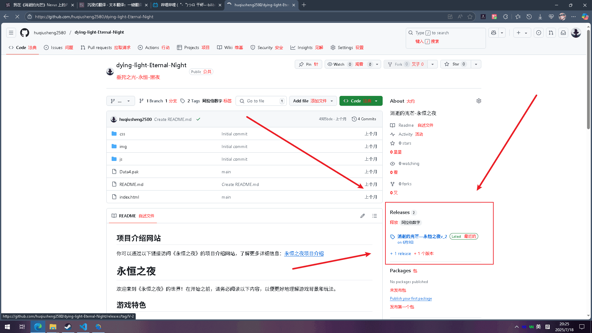

永恒之夜 - 安装指南
2025-07-17
请确保您的游戏版本为1.50或以上。
1，下载最新的mod文件（data4.pak） 点击下图位置下载：

如果是没有接触过内置的玩家，请将data4.pak文件改名为Data3.pak并 放入游戏根目录下的“dw”文件夹中替换原有文件。
SteamLibrary\steamapps\common\Dying Light\DW
如果是接触过内置的玩家，请将data4.pak文件放入游戏根目录下的“Game_Mods”文件夹中即可